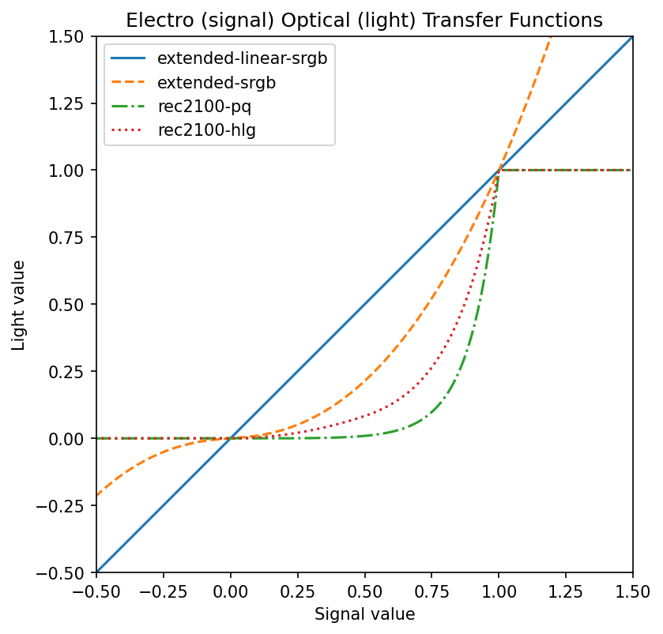

1. Introduction
This section is not normative.
CSS Color 4 adds Wide Color Gamut (WCG) color spaces to the Open Web Platform. By design, these are all Standard Dynamic Range (SDR) color spaces. This specification defines additions to support High Dynamic Range (HDR).

While WCG specifications have been broadly stable for some decades, HDR standards are less mature and have undergone frequent revision in the last decade.
1.1. Value Definitions
This specification follows the CSS property definition conventions from [CSS2] using the value definition syntax from [CSS-VALUES-3]. Value types not defined in this specification are defined in CSS Values & Units [CSS-VALUES-3]. Combination with other CSS modules may expand the definitions of these value types.
In addition to the property-specific values listed in their definitions, all properties defined in this specification also accept the CSS-wide keywords as their property value. For readability they have not been repeated explicitly.
2. HDR Terminology
2.1. Defining Dynamic Range
Dynamic range is the difference in luminance between the lightest and the darkest colors. Dynamic range is measured in photographic stops. One stop is a doubling of luminance.
function DynamicRange( high, low) { return Math. log2( high) - Math. log2( low); }
HDR reference white, also called media white, is the color of a normal white background, or of white text on a dark background. It can be comfortably viewed, over the whole screen.
In Standard Dynamic Range (SDR), HDR reference white is also lightest possible color, produced by full-intensity red, green, and blue.
It is common to adjust the overall brighness of the screen to acommodate user preference or viewing conditions which are different to the standard ones.
For SDR, making the screen brighter does not change the dynamic range, because the darkest color also gets brighter.
In High Dynamic Range (HDR), brighter colors than HDR reference white can be displayed. For example, if HDR reference white on an HDR display is set to 203 cd/m² it might be possible to display small highlights at 1000 cd/m². Typically, the brightest colors can only be displayed on a small part of the display, and for a limited time. This is because of energy usage and heating considerations.
For HDR, using a brighter screen increases the dynamic range, while the luminance of HDR reference white remains constant.
add a diagram showing SDR and HDR dynamic ranges on a log scale
When § 9 Compositing SDR and HDR content, and for color space conversion, the HDR reference white for SDR content should be anchored at 203 cd/m² [Rpt_BT.2408] so that that the HDR reference white level of the inputs to compositing will end up at the HDR reference white level of the combined signal.
When displaying HDR (or mixed SDR and HDR) content, for displays which are less capable than the reference mastering display, and for viewing conditions different to the standard ones, a color re-rendering step ((OOTF) will be performed. This may result in a HDR reference white being displayed at a value lower or higher than 203 cd/m².
2.2. Introducing Headroom
The peak luminance level which an HDR display can produce varies greatly.
The amount by which peak white is greater than HDR reference white is termed the HDR headroom, and depends on the level of HDR reference white, user preference, and viewing conditions.
It is typically expressed in photographic stops. Thus, standard dynamic range (SDR) by definition has an HDR headroom of 0 stops, because the brightest white is HDR reference white.
In dim viewing conditions, with HDR reference white set to 100 cd/m2, this gives four stops (16x) of HDR headroom.
The Web platform does not currently directly expose the level of headroom of a display, because it depends on viewing conditions and real-time, unquantized headroom information would be a tracking vector (for example, detecting that a user moved outside and that it is a sunny day).
It is not always desirable to use the maximum available level of HDR headroom. CSS provides a way to control, in broad terms, how much headroom is desired; and this level can vary by element and over time.
3. Controlling Dynamic Range
3.1. The dynamic-range-limit property
| Name: | dynamic-range-limit |
|---|---|
| Value: | standard | no-limit | constrained | <dynamic-range-limit-mix()> |
| Initial: | no-limit |
| Applies to: | all elements |
| Inherited: | yes |
| Percentages: | n/a |
| Computed value: | see Computed Value for dynamic-range-limit |
| Canonical order: | per grammar |
| Animation type: | by dynamic-range-limit-mix() |
Tests
- standard
- The highest luminance color that is displayed is the same as HDR reference white, i.e. the CSS color white.
- no-limit
- The highest peak luminance that is displayed is much greater than HDR reference white, i.e. the CSS color white; the precise level is not specified.
- constrained
- The highest peak luminance that is displayed is somewhat greater than HDR reference white, i.e. the CSS color white, such that a mix of SDR and HDR content can be comfortably viewed together.
3.2. Mixing Dynamic Range Limits: the dynamic-range-limit-mix() function
This function takes one or more dynamic-range-limit values, converts them internally to a value in stops above HDR reference white, and alters the display to the result of mixing them by the specified amount. For privacy reasons, the actual calculated result is not exposed.
dynamic-range-limit-mix() = dynamic-range-limit-mix( [ <'dynamic-range-limit'> && <percentage [0,100]> ]#{2,} )
Tests
3.3. Computed Value for dynamic-range-limit
If the specified value is standard, constrained, or no-limit, then the computed value is the specified value.
If the specified value is dynamic-range-limit-mix(), then the computed value is determined by the following algorithm:
-
Let v1, ..., vN be the computed values for the parameters to be mixed.
-
Let p1, ..., pN be the mixing percentages, normalized to sum to 100%.
-
Define the contributing percentages as:
-
Let p1_standard,...,pN_standard be the percentages for standard in v1,...,vN
-
Let p1_constrained_high,...,pN_constrained_high be the percentages for constrained in v1,...,vN
-
Let p1_no_limit,...,pN_no_limit be the percentages for no-limit in v1,...,vN
-
-
Compute the weighted sums as:
-
p_standard=(p1_standard*p1+...+pN_standard*pN)/100.
-
p_constrained_high=(p1_constrained_high*p1+...+pN_constrained_high*pN)/100.
-
p_no_limit=(p1_no_limit*p1+...+pN_no_limit*pN)/100.
-
-
If p_standard, p_constrained_high, or p_no_limit equals 100%, then the computed value is standard, constrained, or no-limit, respectively.
-
Otherwise, the computed value is dynamic-range-limit-mix(), with parameters standard, constrained, and no-limit, in that order, and percentages p_standard, p_constrained_high, and p_no_limit, omitting parameters with a percentage equal to 0%. If all parameters are thereby omitted, the computed value is the initial value.
Tests
isdynamic-range-limit-mix ( high10 % , dynamic-range-limit-mix ( standard25 % , constrained75 % ) 20 % , dynamic-range-limit-mix ( constrained10 % , no-limit30 % ) 20 % )
dynamic-range-limit-mix ( standard10 % , constrained40 % , no-limit50 % )
4. The <color> syntax
This module extends the <color-function> type:
<color-function> = <rgb()> | <rgba()> |
<hsl()> | <hsla()> | <hwb()> |
<lab()> | <lch()> | <oklab()> | <oklch()> |
<ictcp()> | <jzazbz()> | <jzczhz()> |
<alpha()> |
<color()>
ictcp() = ictcp([from <color>]?
[<percentage> | <number> | none]
[<percentage> | <number> | none]
[<percentage> | <number> | none]
[ / [<alpha-value> | none] ]? )
jzazbz() = jzazbz([from <color>]?
[<percentage> | <number> | none]
[<percentage> | <number> | none]
[<percentage> | <number> | none]
[ / [<alpha-value> | none] ]? )
jzczhz() = jzczhz([from <color>]?
[<percentage> | <number> | none]
[<percentage> | <number> | none]
[<hue> | none]
[ / [<alpha-value> | none] ]? )
5. HDR colors parameterized by headroom: the hdr-color() function
The hdr-color() function allows a range of colors to be specified, whose value is automatically calculated based on the HDR headroom.
It does this by specifying two <color> values, each with an associated level of HDR headroom. (The two headroom values must not be the same). The actual value is computed by interpolating between these two colors, based on the current amount of HDR headroom, as described in § 5.1 Interpolating colors based on headroom.
For privacy reasons, the actual calculated color is not exposed, nor is the actual HDR headroom, as this is a fingerprinting vector.
Its syntax is as follows:
hdr-color() = color-hdr([ <color> && <number [0,∞]>? ]#{2})
color-hdr ( color ( rec2100-linear0.9 1.0 0.8 ) 0 , color ( rec2100-linear1.8 2.0 1.5 ) 2 );
On a display with HDR headroom <= 0, in other words, an SDR display, this color will display as
color ( rec2100-linear0.9 1.0 0.8 )
On a display with HDR headroom >= 2, this color will display as
color ( rec2100-linear1.8 2.0 1.5 ) 2 );
For displays whose headroom lies between 0 and 2, the color is interpolated. For example, on a display with HDR headroom 1:
X = 243.664, Y = 275.713, Z = 244.000
Colors are interpolated in Absolute D65 CIE XYZ.
This is derived from xyz-d65 by multiplying each color component by 203 [Rpt_BT.2408] to convert from relative units (Y of white is 1, regardless of actual brightness) to absolute units of cd/m², also called "nits". In the sample code, this constant is denoted Yw, the luminance of HDR Reference White.
color ( xyz-d650.9505 1 1.089 )
In absolute D65 XYX this is [192.9426, 203, 221.0787]
5.1. Interpolating colors based on headroom
To interpolate between a color c1 at headroom H1 and a color c2 at headroom H2, giving result color cxyz, when the target headroom is H:
-
Let c1xyz be c1 converted to Absolute D65 CIE XYZ
-
Let c2xyz be c2 converted to Absolute D65 CIE XYZ
-
Let w1 = clamp((H - H2) / (H1 - H2), 0, 1)
-
Let w2 = clamp((H - H1) / (H2 - H1), 0, 1) Note that w2 = 1 - w1
-
Let eps = 0.001
-
Let cxyz = Array(3)
-
For i from 0 to 2: Let cxyz[i] = pow(c1xyz[i] + eps, w1 ) * pow(c2xyz[i] + eps, w2 ) - eps
Note: The factor eps is to prevent division by zero, and is particularly important when interpolating with SDR colors near to black.
c1xyz =[ 173.156 , 195.260 , 178.003 ] c2xyz =[ 342.883 , 389.315 , 334.467 ] w1 =0.5 w2 =0.5 cxyz =[ 243.664 , 275.713 , 244.000 ]
c1xyz =[ 156.285 , 188.337 , 28.015 ] c2xyz =[ 3776.1434 , 4362.407 , 1577.913 ] w1 =0.571 w2 =0.429 cxyz =[ 611.911 , 724.180 , 157.650 ]
Note that c1 will be used unmodified at all headroom values <= 0.5, and c2 will be used unmodified at all headroom values >= 4.
6. Device-Independent HDR Colors
In the same way that CSS Color 4 § 9 Device-independent Colors: CIE Lab and LCH, Oklab and OKLCh allows specifying device-independent SDR colors, this specification allows specifying device-independent HDR colors.
6.1. Introducing ICtCp
This section is not normative.
The ICTCP color space has better perceptual uniformity than CIE Lab, and is used as a part of the color image pipeline in video and digital photography systems for high dynamic range (HDR) and wide color gamut (WCG) imagery.
The T and P subscripts refer to the Tritanope (yellowness-blueness) and Protanope (redness-greenness) opponent color axes in the human visual system. To avoid pesky subscripts, the simplification ICtCp is frequently used.
ICTCP was originaly developed by Dolby Laboratories [What_is_ICtCp] from the IPT color space by Ebner and Fairchild [Development_ITP], and is defined in [Rec_BT.2100] as the Constant Intensity ICTCP signal format. It was intended to replace YCbCr [Perrin].
It is based on the human visual system LMS cone primaries; the Hunt-Pointer-Estevez (HPE) XYZ to LMS transform is used, normalized to a D65 whitepoint. A 4% crosstalk matrix is then applied [What_is_ICtCp], to reduce the gamut hull concavities of BT.2020 RGB, thus reducing interpolation errors. The crosstalk also provides improved lines of constant hue and improved uniformity of Just Noticeable Difference (JND) MacAdam ellipses.
Unlike Lab, which has primarily been tested with lower-intensity reflective colors, ICTCP has been tested with high-chroma (wide color gamut), self-luminous, and high intensity (HDR) colors.
This makes it suitable for HDR color difference measurement (deltaE ITP) and for gamut mapping of mixed SDR and HDR colors.
Here is a very wide gamut primary red in both color spaces:
color ( rec2100-pq0.58 0 0 ) /* ictcp(44.6% -0.129 0.399) */ color ( rec20201 0 0 ) /* ictcp(44.7% -0.130 0.399) */
The two colors are clearly very close in ICTCP and the deltaE ITP is 0.487, meaning the colors are not visually different.
These colors are very different from sRGB "red":
color ( rec2100-pq0.58 0 0 ) /* ictcp(44.6% -0.129 0.399) */ red/* ictcp(42.8% -0.116 0.279) */
the deltaE ITP is 87.7, meaning the colors are very visually different.
6.2. Introducing Jzazbz and JzCzhz
This section is not normative.
The Jzazbz color space [Safdar-PUCS], and its polar form JzCzhz, were designed to be more perceptually uniform for wide gamut colors such as BT.2020, to accurately predict a wide-range of lightness, including HDR colors, and to have minimal inter-dependence between the perceptual attributes (lightness, chroma, and hue). In particular it has superior hue uniformity, compared to CAM16-UCS [Safdar-PUCS].
CIE Lab uses a lightness scale with a [0%, 100%] range, relative to HDR reference white; similarly, Oklab uses a lightness scale with a [0, 1.0] range, again with 1.0 referring to HDR reference white. In contrast, the Jz axis in Jzazbz, which has a [0, 1.0] range, uses an encoding similar to Perceptual Quantizer, and can represent a dynamic range of more than 13 stops.
6.3. ICtCp
The ICtCp color space accepts three numeric parameters, with I representing the Intensity (similar to L in Lab, but covering a luminance range up to 10,000 cd/m2) while CT and CP represent the yellowness-blueness (tritanope) and redness-greenness (protanope) opponent-color axes (similar to b and a, respectively, in Lab).
It has the following characteristics:
| x | y | |
| White chromaticity | D65 | |
|---|---|---|
| Transfer function | Perceptual Quantizer | |
| White luminance | 203 cd/m² | |
| Peak white luminance | 10,000 cd/m² | |
| Black luminance | 0.001 cd/m² | |
| Image state | display-referred | |
| Percentages | Allowed for I, Ct and Cp | |
| Percent reference range | for I: 0% = 0.0, 100% = 1.0 for Ct and Cp: -100% = -0.5, 100% = 0.5 | |
Although [Rec_BT.2100] defines ICTCP by a conversion from linear-light BT.2100 RGB [Rec_BT.2100], this conversion proceeds via LMS and thus, any other color space can also be represented by applying an XYZ to LMS transform as shown in [What_is_ICtCp]. The sample code uses this approach.
ictcp(0.58069 0 0)
Within a relative color syntax ictcp() function, the allowed component keywords are:
-
i is a <number> that corresponds to the origin color’s I (Lightness) after conversion, if required, to ictcp. 1.0 is equivalent to 100%.
-
ct and cp are <number>s that correspond to the origin color’s ct and cp axes after conversion, if required, to ictcp. 0.5 is equivalent to 100%, while -0.5 is equivalent to -100%.
-
alpha is a <number> that corresponds to the origin color’s alpha transparency. 1.0 is equivalent to 100%.
6.4. Jzazbz
The Jzazbz color space accepts three numeric parameters, with Jz representing the Lightness (similar to L in Lab) while az and bz represent the redness-greenness and yellowness-blueness opponent-color axes (similar to a and b in Lab).
Jzazbz has the following characteristics:
| x | y | |
| White chromaticity | D65 | |
|---|---|---|
| Transfer function | Perceptual Quantizer | |
| Peak white luminance | 10,000 cd/m² | |
| Black luminance | 0.001 cd/m² | |
| Image state | display-referred | |
| Percentages | Allowed for Jz, az and bz | |
| Percent reference range | for Jz: 0% = 0.0, 100% = 1.0 for az and bz: -100% = -0.21, 100% = 0.21 | |
Note that unlike Lab, a D65 whitepoint is used. Thus, for most RGB spaces (which also use a D65 whitepoint) no chromatic adaptation step need be performed.
Sample code for converting between XYZ-D65 and Jzazbz is provided.
jzazbz(0.22207 -0.00016 -0.00012)
Within a relative color syntax jzazbz() function, the allowed component keywords are:
-
j is a <number> that corresponds to the origin color’s Jz (Lightness) after conversion, if required, to jzazbz. 1.0 is equivalent to 100%.
-
a and b are <number>s that correspond to the origin color’s az and bz axes after conversion, if required, to jzazbz. 0.21 is equivalent to 100%, while -0.21 is equivalent to -100%.
-
alpha is a <number> that corresponds to the origin color’s alpha transparency. 1.0 is equivalent to 100%.
6.5. JzCzhz
Similar to LCH, which is the polar representation of Lab, JzCzhz is the polar form of Jzazbz.
Jz is identical to the value in Jzazbz and represents the Lightness, while Cz represents the Chroma or colorfulness and hz represents a hue angle, measured from the positive az axis, towards the positive bz axis.
It has the following characteristics:
| x | y | |
| White chromaticity | D65 | |
|---|---|---|
| Transfer function | Perceptual Quantizer | |
| Peak white luminance | 10,000 cd/m² | |
| Black luminance | 0.001 cd/m² | |
| Image state | display-referred | |
| Percentages | Allowed for Jz and Cz | |
| Percent reference range | for Jz: 0% = 0.0, 100% = 1.0 for Cz: 0% = 0.0, 100% = 0.26 | |
| Powerless hue ε | Cz <= 0.0000026 | |
jzazbz(0.17542 -0.1179 0.1092)and here is the same color in the polar form
jzczhz(0.17542 0.1614 132.50)
Within a relative color syntax jzczhz() function, the allowed component keywords are:
-
j is a <number> that corresponds to the origin color’s Jz (Lightness) after conversion, if required, to jzczhz. 100 is equivalent to 100%.
-
c is a <number> that corresponds to the origin color’s Cz (chroma) after conversion, if required, to jzczhz. 0.26 is equivalent to 100%.
-
h is a <number> that corresponds to the origin color’s hz (hue), in degrees, after conversion, if required, to jzczhz, normalized to a [0, 360] range. 90 is equivalent to 90deg.
-
alpha is a <number> that corresponds to the origin color’s alpha transparency. 1.0 is equivalent to 100%.
6.5.1. Converting Jzazbz colors to JzCzhz colors
Conversion to JzCzhz is trivial:
- hz = atan2(bz, az) // but convert to degrees!
- Cz = sqrt(az^2 + bz^2)
- Jz is the same
In addition, practical code should return a none value if Cz is less than ε.
6.5.2. Converting JzCzhz colors to Jzazbz colors
Conversion to Jzazbz is trivial:
- az = Cz cos(H) // convert to radians first!
- bz = Cz sin(H) // convert to radians first!
- Jz is the same
In addition, practical code should check for a none value for hz.
7. Specifying Predefined and Custom Color Spaces: the color() Function
The color() function allows a color to be specified in a particular, given color space (rather than the implicit sRGB color space that most of the other color functions operate in).
This specification extends the color() function to allow predefined color spaces for HDR, in addition to the predefined SDR spaces from CSS Color 4 § 10. Predefined Color Spaces and the relative color syntax from CSS Color 5 § 4 Relative Colors.
Its syntax is now as follows:
<predefined-rgb> = srgb | srgb-linear | display-p3 | display-p3-linear | a98-rgb | prophoto-rgb | rec2020 | rec2100-pq | rec2100-hlg | rec2100-linear
8. Predefined color spaces for HDR:
In addition to the SDR color spaces defined by CSS Color 4, the following HDR color spaces are defined for use in the color function.
Serialization of values in these new color spaces is identical to the description in CSS Color 4 § 15. Serializing <color> Values.
8.1. rec2100-pq
The rec2100-pq [Rec_BT.2100] color space accepts three numeric parameters, representing the red, green, and blue channels of the color, with each having a valid range of [0, 1] regardless of the actual bit depth (10 or 12 bits per component).
The Perceptual Quantizer (PQ) electro-optical transfer function is used [SMPTE-ST-2084],[Rec_BT.2100]. PQ assumes a reference viewing condition where the screen surround is at 5 cd/m².
ITU Reference 2100 is used for HDR 4k and 8k television.
It has the following characteristics: (The display primaries are the same as [Rec.2020]):
| x | y | |
| Red chromaticity | 0.708 | 0.292 |
|---|---|---|
| Green chromaticity | 0.170 | 0.797 |
| Blue chromaticity | 0.131 | 0.046 |
| White chromaticity | D65 | |
| Transfer function | Perceptual Quantizer | |
| White luminance | 203 cd/m² | |
| Peak white luminance | 10,000 cd/m² | |
| Black luminance | ≤ 0.005 cd/m² | |
| Image state | display-referred | |
| Percentages | Allowed for R, G and B | |
| Percent reference range | for R,G,B: 0% = 0.0, 100% = 1.0 | |
For narrow-range PQ video in a non-reference viewing environment, or for HLG (in any viewing environment), the black level should be adjusted using the PLUGE test signal and procedure specified in [Rec_BT.814] Annex . For PQ values in CSS, which uses wide-range, the black corresponds to code point 0.
color(rec2100-pq 1.0 1.0 1.0);
color(rec2100-pq 0.58 0.58 0.58);This color represents a mid grey, like a photographer’s "18% reflectance grey" card, at 17 cd/m².
color(rec2100-pq 0.34 0.34 0.34)
add other examples, including encoding of sRGB red, green, blue and P3 red, green, blue.
Linear-light RGB signals are converted to PQ encoded as follows. The maximum encodable value (peak, small-area white) in PQ is 10,000 cd/m². HDR reference white is 203 cd/m² [Rpt_BT.2408].
xPQ is the "gamma-corrected" (OETF-adjusted) signal [0, 1].var Er; // the red, green or blue component, [0, 1] for SDR, [0, 70ish] for HDR var Yw= 203 ; // the luminance of diffuse white, cd/m² var x= Er* Yw/ 10000 ; // luminance of peak white is 10,000 cd/m². const n= 2610 / ( 2 ** 14 ); const m= 2523 / ( 2 ** 5 ); const c1= 3424 / ( 2 ** 12 ); const c2= 2413 / ( 2 ** 7 ); const c3= 2392 / ( 2 ** 7 ); xPQ= ((( c1+ ( c2* ( x** n))) / ( 1 + ( c3* ( x** n)))) ** m);
PQ encoded values are converted to linear-light as follows:
var xPQ; // the red, green or blue PQ-encoded component, [0, 1] const ninv= ( 2 ** 14 ) / 2610 ; const minv= ( 2 ** 5 ) / 2523 ; const c1= 3424 / ( 2 ** 12 ); const c2= 2413 / ( 2 ** 7 ); const c3= 2392 / ( 2 ** 7 ); var x= ((( Math. max((( xPQ** minv) - c1), 0 ) / ( c2- ( c3* ( xPQ** minv)))) ** ninv); var Yw= 203 ; // the luminance of diffuse white, cd/m² var Ea= x* 10000 ; // luminance, [0, 10,000]. var Er= x* 10000 / Yw; // luminance relative to diffuse white, [0, 70 or so].
8.2. rec2100-hlg
The rec2100-hlg [Rec_BT.2100] color space accepts three numeric parameters, representing the red, green, and blue channels of the color, with each having a valid range of [0, 1] regardless of the actual bit depth (10 or 12 bits per component).
The Hybrid Log-Gamma (HLG) electro-optical transfer function is used [ARIB_STD-B67],[Rec_BT.2100]. HLG can be used with displays of different brightness in a wide range of viewing environments, with user control of the overall brightness level. A value of 0.75 represents "diffuse" or "media" white while an "18% reflectance grey" card has a value of 0.38. [Rec_BT.2390].
It has the following characteristics: (The display primaries are the same as [Rec.2020]):
| x | y | |
| Red chromaticity | 0.708 | 0.292 |
|---|---|---|
| Green chromaticity | 0.170 | 0.797 |
| Blue chromaticity | 0.131 | 0.046 |
| White chromaticity | D65 | |
| Transfer function | Hybrid Log-Gamma | |
| White luminance | depends on viewing conditions | |
| Peak white luminance | 12 times reference white | |
| Black luminance | depends on reference white, see text | |
| Image state | scene-referred | |
| Percentages | Allowed for R, G and B | |
| Percent reference range | for R,G,B: 0% = 0.0, 100% = 1.0 | |
For narrow-range HLG video (in any viewing environment), the black level should be adjusted using the PLUGE test signal and procedure specified in [Rec_BT.814] Annex 4.
For HLG values in CSS, which uses wide-range, the black corresponds to code point 0.
color(rec2100-hlg 0.75 0.75 0.75);This color represents a mid grey, at 26 to 104 cd/m².
color(rec2100-hlg 0.38 0.38 0.38)
Linear-light RGB signals are converted to HLG encoded as follows [Rec_BT.2390]:
Edash is the "gamma-corrected" (OETF-adjusted) signal.var E; // the red, green or blue component, [0, 1] const a= 0.17883277 ; const b= 0.28466892 ; // 1 - (4 * a) const c= 0.55991073 ; // 0.5 - a * Math.log(4 *a) // handle negative values var sign= E< 0 ? - 1 : 1 ; var abs= Math. abs( E); if ( abs<= 1 / 12 ) { Edash= sign* Math. sqrt( 3 * abs); } else { Edash= a* Math. log( 12 * E- b) + c; }
The reverse conversion (HLG encoded to linear light) is as follows [Rec_BT.2390]::
var Edash; // the red, green or blue encoded component, [0, 1] const a= 0.17883277 ; const b= 0.28466892 ; // 1 - (4 * a) const c= 0.55991073 ; // 0.5 - a * Math.log(4 *a) if ( Edash<= 0.5 ) { E= ( Edash** 2 ) / 3 ; } else { E= ( Math. exp(( Edash- c) / a) + b) / 12 ; }
add black level lift Β as defined on same page?
8.3. rec2100-linear
The rec2100-linear [Rec_BT.2100] color space accepts three numeric parameters, representing the red, green, and blue channels of the color, with each having a nominal range of [0, 1] regardless of the actual bit depth (10 or 12 bits per component).
The color with red, green and blue all at 1.0 represents HDR reference white with a luminance of 203 cd/m².
color ( rec2100-linear1 1 1 )
color ( rec2100-linear9.852 9.852 9.852 )
represents a white highlight with a luminance of 9.852 × 203 = 1,999 cd/m².
color(rec2100-linear 1 1 1)
A linear-light electro-optical transfer function is used.
It has the following characteristics: (The display primaries are the same as [Rec.2020]):
| x | y | |
| Red chromaticity | 0.708 | 0.292 |
|---|---|---|
| Green chromaticity | 0.170 | 0.797 |
| Blue chromaticity | 0.131 | 0.046 |
| White chromaticity | D65 | |
| Transfer function | Linear | |
| White luminance | 203 cd/m² | |
| Peak white luminance | 10,000 cd/m² | |
| Black luminance | 0.001 cd/m² | |
| Image state | display-referred | |
| Percentages | Allowed for R, G and B | |
| Percent reference range | for R,G,B: 0% = 0.0, 100% = 1.0 | |
9. Compositing SDR and HDR content
Compositing should take place in CIE XYZ, as it is a linear-light space without gamut limitations. Implementations may chose to composite in a linear-light RGB space instead, which will give the same result provided out-of-gamut values (negative, or greater than 100%) are correctly handled and not clipped or gamut mapped until the final transfer to the device color space.
HDR using the HLG transfer function, must map SDR HDR reference white to the same luminance as is used to display the 75% HLG value. [SMPTE-ST-2084]
For further details, see also tables 3 and 4 in ITU Rpt_BT.2408-0 [Rpt_BT.2408]
HDR using the PQ transfer function, should map SDR HDR reference white to 203 cd/m², the same luminance as is used to display the 58% PQ value. [SMPTE-ST-2084].
However, implementations may chose to incorporate a color re-rendering step to account for non-reference viewing conditions.
10. Serializing <color> Values
10.1. Serializing values of the color() function
This section extends CSS Color 4 § 15.5 Serializing values of the color() function
The serialized form of color() values is derived from the computed value and uses the color() form, with ASCII lowercase letters for the function name and the color space name.
The component values are serialized in base 10, as <number>. A single ASCII space character " " must be used as the separator between the component values, and also between the color space name and the first color component.
For the predefined HDR color spaces, the minimum precision for round-tripping is as follows:
| HDR color space | Minimum bits |
|---|---|
| rec2100-pq, rec2100-hlg | 10 |
| rec2100-linear, jzazbz, jzczhz, ictcp | 16 |
(16bit, half-float, or float per component is recommended for internal storage). Values must be rounded towards +∞, not truncated.
11. Sample code for Color Conversions
This section is not normative.
Tests
This section is not normative, it does not need tests.
For clarity, a library is used for matrix multiplication. (This is more readable than inlining all the multiplies and adds). The matrices are in column-major order.
This code also assumes all of the conversion code from CSS Color 4 § 18. Sample code for Color Conversions is available.
The LMS used in Jzazbz are not the same as the ones used in ICtCp, take care to use the right ones!
11.1. Sample code for rec2100-linear
The BT.2020 and BT.2100 color spaces use the same RGB primaries and white point, and both place HDR reference white at a component value of 1.0.
// These functions use the color conversion functions from CSS Color 4 function XYZ_to_lin_2100( XYZ) { // convert an array of D65 XYZ to linear-light BT.2100 RGB // such that [0,0,0] is black and [1,1,1] is media white. // component values greater than 1 indicate HDR colors return XYZ_to_lin_2020( XYZ); } function lin_2100_to_XYZ( RGB) { // convert an array of linear-light BT.2100 RGB values // to D65 XYZ return lin_2020_to_XYZ( RGB); }
11.2. Sample code for rec2100-pq
function XYZ_to_pq_2100( XYZ) { // convert an array of D65 XYZ to PQ-encoded BT.2100 RGB // such that [0,0,0] is black and [1,1,1] is 10,000 cd/m^2 white; // media white is at [0.5807,0.5807,0.5807] (to four significant figures). let linRGB= XYZ_to_lin_2100( XYZ); return pq_encode( linRGB); } function pq_2100_to_XYZ( RGB) { // convert an array of PQ-encoded BT.2100 RGB values // to D65 XYZ let linRGB= pq_decode( RGB); return lin_2100_to_XYZ( linRGB); } function pq_encode( RGB) { const Yw= 203 ; // absolute luminance of media white, cd/m² const n= 2610 / ( 2 ** 14 ); const m= 2523 / ( 2 ** 5 ); const c1= 3424 / ( 2 ** 12 ); const c2= 2413 / ( 2 ** 7 ); const c3= 2392 / ( 2 ** 7 ); // given PQ encoded component in range [0, 1] // return media-white relative linear-light return RGB. map( function ( val) { let x= Math. max( val* Yw/ 10000 , 0 ); // absolute luminance of peak white is 10,000 cd/m². let num= ( c1+ ( c2* ( x** n))); let denom= ( 1 + ( c3* ( x** n))); return (( num/ denom) ** m); }); } function pq_decode( RGB) { const Yw= 203 ; // absolute luminance of media white, cd/m² const ninv= ( 2 ** 14 ) / 2610 ; const minv= ( 2 ** 5 ) / 2523 ; const c1= 3424 / ( 2 ** 12 ); const c2= 2413 / ( 2 ** 7 ); const c3= 2392 / ( 2 ** 7 ); // given PQ encoded component in range [0, 1] // return media-white relative linear-light return RGB. map( function ( val) { let x= (( Math. max((( val** minv) - c1), 0 ) / ( c2- ( c3* ( val** minv)))) ** ninv); return ( x* 10000 / Yw); // luminance relative to diffuse white, [0, 70 or so]. }); }
11.3. Sample code for rec2100-hlg
function XYZ_to_hlg_2100( XYZ) { // convert an array of D65 XYZ to HLG-encoded BT.2100 RGB // such that [0,0,0] is black and [0.75,0.75,0.75] is media white let linRGB= XYZ_to_lin_2100( XYZ); return hlg_encode( linRGB); } function hlg_2100_to_XYZ( RGB) { // convert an array of PQ-encoded BT.2100 RGB values // to D65 XYZ let linRGB= hlg_decode( RGB); return lin_2100_to_XYZ( linRGB); } function hlg_encode( RGB) { const a= 0.17883277 ; const b= 0.28466892 ; // 1 - (4 * a) const c= 0.55991073 ; // 0.5 - a * Math.log(4 *a) const scale= 3.7743 ; // Place 18% grey at HLG 0.38, so media white at 0.75 return RGB. map( function ( val) { // first scale to put linear-light media white at 1/3 val/= scale; // now the HLG OETF // ITU-R BT.2390-10 p.23 // 6.1 The hybrid log-gamma opto-electronic transfer function (OETF) if ( val<= 1 / 12 ) { return spow( 3 * val, 0.5 ); } return a* Math. log( 12 * val- b) + c; }); } function hlg_decode( RGB) { const a= 0.17883277 ; const b= 0.28466892 ; // 1 - (4 * a) const c= 0.55991073 ; // 0.5 - a * Math.log(4 *a) const scale= 3.7743 ; // Place 18% grey at HLG 0.38, so media white at 0.75 return RGB. map( function ( val) { // first the HLG EOTF // ITU-R BT.2390-10 p.30 section // 6.3 The hybrid log-gamma electro-optical transfer function (EOTF) // Then scale by 3 so media white is 1.0 if ( val<= 0.5 ) { return ( val** 2 ) / 3 * scale; } return (( Math. exp(( val- c) / a) + b) / 12 ) * scale; }); } function spow( base, exp) { let sign= base< 0 ? - 1 : 1 ; return sign* ( Math. abs( base) ** exp); }
11.4. Sample code for jzazbz
This uses the same signed power (spow) function defined above.
function XYZ_to_Jzazbz( XYZ) { // convert an array of D65 XYZ toJzAzBz // such that [0,0,0] is black and // media white is [0.2220, -0.00016, -0.0001] const Yw= 203 ; // absolute luminance of media white const M= [ [ 0.41478972 , 0.579999 , 0.0146480 ], [ - 0.2015100 , 1.120649 , 0.0531008 ], [ - 0.0166008 , 0.264800 , 0.6684799 ], ]; const b= 1.15 ; const g= 0.66 ; // First make XYZ absolute, not relative to media white // Maximum luminance in PQ is 10,000 cd/m² // BT.2048 says media white Y=203 cd/m² let [ Xa, Ya, Za] = XYZ. map( v=> v* Yw); // then modify X and Y, to minimize blue curvature let Xm= b* Xa- ( b- 1 ) * Za; let Ym= g* Ya- ( g- 1 ) * Xa; // now move to LMS cone domain let LMS= multiplyMatrices( M, [ Xm, Ym, Za]); return LMStoJzazbz( LMS); } function LMStoJzazbz( LMS) { const M= [ [ 0.5 , 0.5 , 0 ], [ 3.524000 , - 4.066708 , 0.542708 ], [ 0.199076 , 1.096799 , - 1.295875 ], ]; const c1= 3424 / 2 ** 12 ; const c2= 2413 / 2 ** 7 ; const c3= 2392 / 2 ** 7 ; const n= 2610 / 2 ** 14 ; const p= ( 1.7 * 2523 ) / 2 ** 5 ; // compared to usual PQ, 1.7 scale const d= - 0.56 ; const d0= 1.6295499532821566e-11 ; // tiny shift to move black back to 0 // PQ-encode LMS let PQLMS= ( LMS. map( function ( val) { let num= c1+ c2* spow(( val/ 10000 ), n); let denom= 1 + c3* spow(( val/ 10000 ), n); return spow(( num/ denom), p); }) ); // calculate Iz az bz let [ Iz, az, bz] = multiplyMatrices( M, PQLMS); // now Jz from Iz let Jz= (( 1 + d) * Iz) / ( 1 + d* Iz) - d0; return [ Jz, az, bz]; } function Jzazbz_to_XYZ( Jzazbz) { // convert an array of JzAzBz to D65 XYZ // such that [0,0,0] is black and // media white is [0.2220, -0.00016, -0.0001] const b= 1.15 ; const g= 0.66 ; const M= [ [ 1.9242264357876067 , - 1.0047923125953657 , 0.037651404030618 ], [ 0.35031676209499907 , 0.7264811939316552 , - 0.06538442294808501 ], [ - 0.09098281098284752 , - 0.3127282905230739 , 1.5227665613052603 ], ]; let LMS= Jzazbz_to_LMS( Jzazbz); // modified absolute XYZ let [ Xm, Ym, Za] = multiplyMatrices( LMS, M); // un-modify X and Y to get D65 XYZ, relative to media white let Xa= ( Xm+ ( b- 1 ) * Za) / b; let Ya= ( Ym+ ( g- 1 ) * Xa) / g; return [ Xa, Ya, Za]; } function Jzazbz_to_LMS( Jzazbz) { const d= - 0.56 ; const d0= 1.6295499532821566e-11 ; const c1= 3424 / 2 ** 12 ; const c2= 2413 / 2 ** 7 ; const c3= 2392 / 2 ** 7 ; const pinv= 2 ** 5 / ( 1.7 * 2523 ); const M= [ [ 1 , 0.13860504327153927 , 0.05804731615611883 ], [ 1 , - 0.1386050432715393 , - 0.058047316156118904 ], [ 1 , - 0.09601924202631895 , - 0.81189189605603900 ], ]; let [ Jz, az, bz] = Jzazbz; let Iz= ( Jz+ d0) / ( 1 + d- d* ( Jz+ d0)); // bring into LMS cone domain let PQLMS= multiplyMatrices([ Iz, az, bz], M); // convert from PQ-coded to linear-light LMS let LMS= ( PQLMS. map( function ( val) { let num= c1- spow( val, pinv); let denom= c3* spow( val, pinv) - c2; let x= 10000 * spow( num/ denom, ninv); return x; // luminance relative to diffuse white, [0, 70 or so]. }) ); return LMS; }
11.5. Sample code for ICtCp
Rather than first requiring conversion to rec2100-linear, which is how the conversion is defined in [Rec_BT.2100], this sample code proceeds directly from absolute CIE XYZ for compatibility with the other color conversion code.
The 4% crosstalk matrix, and the hue rotation, are also built into the XYZ to LMS step, rather than being applied as three separate steps.
The end result is identical, this just takes fewer steps.
function XYZ_to_ICtCp( XYZ) { // convert an array of D65 XYZ to ICtCp // The matrix below includes the 4% crosstalk components // and is from the procedure in the Dolby "What is ICtCp" paper" const M= [ [ 0.3592832590121217 , 0.6976051147779502 , - 0.0358915932320290 ], [ - 0.1920808463704993 , 1.1004767970374321 , 0.0753748658519118 ], [ 0.0070797844607479 , 0.0748396662186362 , 0.8433265453898765 ], ]; let LMS= multiplyMatrices( M, XYZ. map( v=> v* Yw)); return LMStoICtCp( LMS); } function LMStoICtCp( LMS) { const c1= 3424 / 4096 ; const c2= 2413 / 128 ; const c3= 2392 / 128 ; const m1= 2610 / 16384 ; const m2= 2523 / 32 ; // This matrix includes the Ebner LMS coefficients, // the rotation, and the scaling to [-0.5,0.5] range // rational terms are from Fröhlich p.97 // and ITU-R BT.2124-0 pp.2-3 const M= [ [ 2048 / 4096 , 2048 / 4096 , 0 ], [ 6610 / 4096 , - 13613 / 4096 , 7003 / 4096 ], [ 17933 / 4096 , - 17390 / 4096 , - 543 / 4096 ], ]; // apply the PQ EOTF // values scaled so [0, 10,000] maps to [0, 1] // we can't ever be dividing by zero because of the "1 +" in the denominator let PQLMS= LMS. map( function ( val) { let num= c1+ ( c2* (( val/ 10000 ) ** m1)); let denom= 1 + ( c3* (( val/ 10000 ) ** m1)); return ( num/ denom) ** m2; }); // LMS to IPT, with rotation for Y'C'bC'r compatibility return multiplyMatrices( M, PQLMS); } function ICtCp_to_XYZ( ICtCp) { // convert ICtCp to an array of absolute, D65 XYZ const M= [ [ 2.0701522183894223 , - 1.3263473389671563 , 0.2066510476294053 ], [ 0.3647385209748072 , 0.6805660249472273 , - 0.0453045459220347 ], [ - 0.0497472075358123 , - 0.0492609666966131 , 1.1880659249923042 ], ]; let LMS= ICtCptoLMS( ICtCp); return multiplyMatrices( M, LMS); } function ICtCptoLMS( ICtCp) { const c1= 3424 / 4096 ; const c2= 2413 / 128 ; const c3= 2392 / 128 ; const im1= 16384 / 2610 ; const im2= 32 / 2523 ; const M= [ [ 0.9999999999999998 , 0.0086090370379328 , 0.1110296250030260 ], [ 0.9999999999999998 , - 0.0086090370379328 , - 0.1110296250030259 ], [ 0.9999999999999998 , 0.5600313357106791 , - 0.3206271749873188 ], ]; let PQLMS= multiplyMatrices( M, ICtCp); // Undo PQ encoding, From BT.2124-0 Annex 2 Conversion 3 let LMS= PQLMS. map( function ( val) { let num= Math. max(( val** im2) - c1, 0 ); let denom= ( c2- ( c3* ( val** im2))); return 10000 * (( num/ denom) ** im1); }); return LMS;
11.6. Sample code for hdr-color()
function hdrColor( col1, H1, col2, H2, H) { // col1, col2 are arrays representing two colors, in Absolute XYZ // H1 and H2 are the headroom for each color (in stops, ie log scale, 0 = SDR) // H is available headroom // first check the headrooms are distinct if ( H1== H2) return 0 ; let w1= clamp(( H- H2) / ( H1- H2), 0 , 1 ); let w2= clamp(( H- H1) / ( H2- H1), 0 , 1 ); let eps= 0.001 ; let cxyz= Array( 3 ); for ( let i= 0 ; i< 3 ; i++ ) { cxyz[ i] = Math. pow( c1xyz[ i] + eps, w1) * Math. pow( c2xyz[ i] + eps, w2) - eps; } return cxyz; } const clamp= ( n, min, max) => Math. min( Math. max( n, min), max)
12. Sample code for ΔEITP Color Differences
This section is not normative.
Tests
This section is not normative, it does not need tests.
The ΔEITP [Rec_BT.2124] color difference metric may be used to measure the perceptual color difference between two display-referred colors in an HDR or mixed SDR/HDR context, for example in display calibration or gamut and tone mapping.
It is a Euclideam distance in ICtCp color space, scaled such that a ΔEITP of 1.0 represents one just-noticeable difference.
// Calculate deltaE ITP // scaled root sum of squares // ITU-R BT.2124-0 Annex 1 /** * @param {number[]} reference - Array of ICtCp: I as 0..1, Ct and Cp as -1..1 * @param {number[]} sample - Array of ICtCp: I as 0..1, Ct and Cp as -1..1 * @return {number} How different a color sample is from reference */ function deltaEITP( reference, sample) { let [ I1, Ct1, Cp1] = reference; let [ I2, Ct2, Cp2] = sample; let ΔI= I1- I2; let ΔT= 0.5 * ( Ct1- Ct2); let ΔP= Cp1- Cp2; return 720 * Math. sqrt( ΔI** 2 + ΔT** 2 + ΔP** 2 ); }
Privacy Considerations
The reason that numerical values of HDR headroom are not directly exposed by the Web platform is because doing so would expose the current viewing conditions, which would be a privacy violation.
Security Considerations
No Security concerns have been raised on this document
Accessibility Considerations
Some individuals may have a sensitivity to very bright colors, so user agents should provide a mechanism to limit the maximum luminance at user option. The toe and knee procedure in section 5.4.1 Mapping to display with limited brightness range of [Rec_BT.2390] is suggested as suitable.
The dynamic-range-limit property could also be set to standard or constrained in a user stylesheet.
Changes
Changes since the 17 December 2024 First Public Working Draft
- Removed mention of SMPTE-ST-2094-50 as justification for eps (#12873, #11788)
- Noted similarity of hdr-color to adaptive gain curves
- Added alpha() RCS to color syntax #10689
- Added display-p3-linear to color spaces for interpolation (#12596)
- Added a couple of deltaE ITP worked examples (#11250)
- Added display-p3-linear colorspace (#12596)
- Added the clamp function which is used in hdr-color()
- Added sample code for hdr-color()
- Explained what the eps factor is for (#11788)
- Added second color-hdr() worked example
- Defined the term "Absolute D65 CIE XYZ"
- Clarified pseudo-code for color-hdr() to show each component is calculated separately (#11694)
- In dynamic-range-limit-mix(), change to 'one or more' per WG resolution (#11694)
- Clarified that the computed value of dynamic-range-limit-mix(), when all parameters are omitted, is the initial value (#11678)
- Removed re-definition of "color(), link to definition in CSS Color 5 instead (#11954)
- Changed "constrained-high" back to "constrained", per WG resolution (#11698)
- Define epsilon on chroma of JzCzhz, for missing hue (#11706)
- Properly exported, and consistently used, the term "required conversion"
- Removed erroneous negative chroma reference range in JzCzhz
- Added RCS component keywords for relative ictcp, jzazbz, and jzczhz (#11713)
- Prevented color() links from pointing to back to CSS Color 5, which is SDR-only
- Added an informative section introducing ICtCp, moved definition out from color() (#11713)
- Removed duplicate productions, already existing in CSS Color 5 (#11954)
- Reference ranges encompass the BT.2100 gamut (#11710)
- Remove the "invalid if sum to zero" wording, per CSS WG resolution (#11678)
- Consistently use log (stops) definition of headroom, not linear (multiplier) headroom (#11787)
- Consistently used preferred term "HDR reference white", not "media white"
- Added example of color interpolation (#11616)
- Added interpolation algorithm (#11616)
- Added section on interpolating colors parameterized by headroom (#11616)
- Added color-hdr function per WG resolution. Added ISO 21496-1 informative reference (#11616)
- Added sample code for Jzazbz (#9934)
- Add missing signed power function for sample code
- Added sample code for rec2100 colorspaces (#9934)
- Added sample code for ICtCp (#9934)
- Added informative reference to the Perrin ICtCp paper
- Added new section, sample code for color conversions (#9934)
- Added informative reference to Dolby "What is ICtCp" white paper (#9934)
- Clarified on the grammar and spec text for dynamic-range-limit-mix() (#11672)
- Added ΔEITP color difference metric from BT.2124 (#11250)
- For dynamic-range-limit, changes high to no-limit (#11698)
- Corrected prose, dynamic-range-limit-mix takes 2 or more values (#11694)
- Removed absolute and relative HDR concepts, stress instead scene-referred and display-referred. Anchor media white, and allow color re-rendering (#10460)
- Defined "media white" more clearly
- Collected together explanatory material into an introductory section